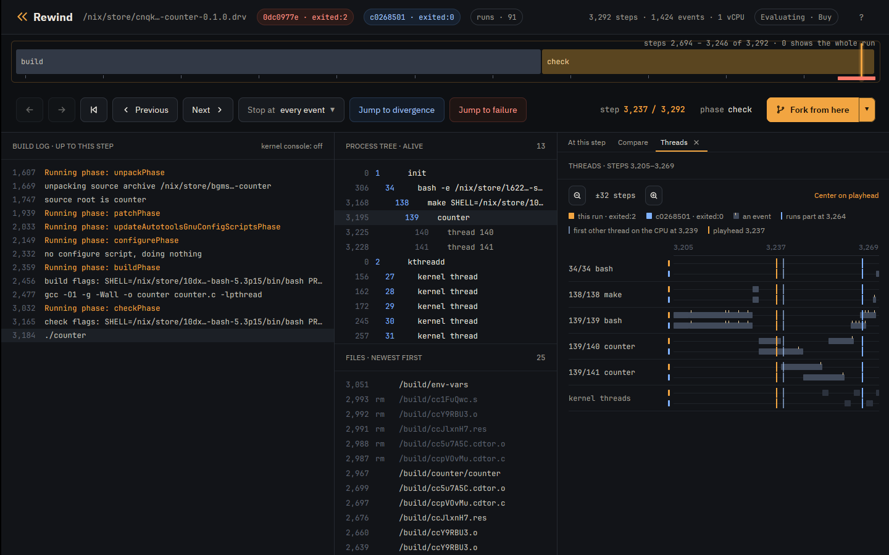

Tutorial · Points
Tutorial: schedule points
rewind check switches threads where the program makes a system call, and
nowhere else. A race between two system calls is in its reach, as the
properties tutorial's bank is: each deposit
writes a ledger line between reading the balance and storing it. A race with nothing between
the read and the store is not, and no number of schedules finds it. A schedule point is one
line from the Rewind SDK that puts a switch there.
The example is counter from
examples: two threads
count hits on one counter, and each hit reads the count and stores the count plus one.
Install Rewind as the Nix tutorial does.
The race no schedule reaches
counter asserts with the SDK that the total adds up, so check judges each run
by the sdk property. Under 64 schedules, every run holds:
$ rewind check --epoch 1790985600 github:fzakaria/rewindvm#counter
...
schedule 64: exited:0 5346 steps e3f96e451c97 run 214ec43ef4e47c61 holds
every property held under all 65 schedulesThe threads do race. On a multicore host they run at the same instant, and one hit in a while lands between the other thread's read and store. In the VM they take turns on one CPU, and a thread gives the CPU up only at a system call: thread creation, the join at the end, nothing inside the loop. Each thread counts its ten hits in one stretch, and the total is always twenty.
Mark the place
Clone the repository to edit counter:
$ git clone https://github.com/fzakaria/rewindvm
$ cd rewindvm
In examples/counter/counter.c, put a schedule point between the read and the
store:
@@ -27,6 +27,8 @@
static void hit(void)
{
long seen = atomic_load(&hits);
+ /* A schedule point: `rewind check` can switch threads here. */
+ rewind_point();
atomic_store(&hits, seen + 1);
}
rewind_point() makes one exit from the VM, where a schedule can switch to
another thread or hold this one up, as at any system call. It writes nothing to the run,
and outside Rewind it does nothing.
Now check finds a schedule that loses hits, and narrows it to the point that decides it:
$ rewind check --epoch 1790985600 .#counter | grep -E 'decides it|passing:|failing:|failing run violates sdk'
rewind: packing 62 store paths for counter-0.1.0
step 3237 decides it: a reschedule there makes the run violate same-outcome, sdk
passing: run b8d95c7393fc72fc, schedule 0
failing: run 51b8ba90ce0789b5, schedule 1 over steps 3237..3238
failing run violates sdk: step 3265: always "hits-add-up" failed: 10 hits, expected 20
The run violates same-outcome too, since the job's build fails where schedule
0's passed. Step 3237 is a point: one thread has read the count and not stored it, and the
switch there lets the other thread count every hit it has before the store lands.
rewind threads shows which thread held the CPU around the point, in the
failing run and in the passing one it was forked from:
$ rewind threads 51b8ba90 --from 3235 --to 3239
3235 3238 139/140 counter
3239 3239 139/141 counter$ rewind threads b8d95c73 --from 3235 --to 3239
3235 3239 139/140 counterThread 139/141 takes the CPU at step 3239 of the failing run, and not in the passing one. Open the failing run beside the passing one, at the point, with the thread lanes shown and zoomed in on the window around it:
$ rewind open 51b8ba90 3237 --compare b8d95c73
The Threads panel has a lane per thread, with the stretches each held the CPU: the failing
run's above, the passing run's in blue under them. In the failing run, the other
counter thread's lane starts right after the playhead and runs until its hits
are counted; in the passing run, the first thread keeps the CPU through the window.
Check the fix
Store only if the count is still what was read, and read it again if not:
@@ -23,13 +23,14 @@
static atomic_long hits;
-/* The race: the count read here is stale by the time it is stored. */
+/* Stores only if the count is still what was read, and reads again if not. */
static void hit(void)
{
long seen = atomic_load(&hits);
/* A schedule point: `rewind check` can switch threads here. */
rewind_point();
- atomic_store(&hits, seen + 1);
+ while (!atomic_compare_exchange_weak(&hits, &seen, seen + 1))
+ ;
}
static void *count(void *arg)The point stays. A switch there now finds the count changed, and the compare and exchange reads it again instead of storing over it:
$ rewind check --epoch 1790985600 .#counter | tail -1
rewind: packing 62 store paths for counter-0.1.0
every property held under all 65 schedulesWhere a point goes
A point goes where a switch would matter and no system call happens: between a read and
the store computed from it, in a lock-free structure's push or pop, at the top of a retry
loop. A codebase that wraps its atomics in macros of its own gets a point at every atomic
by adding one line to that header. Each point costs one exit per visit, so a run with a
point in a hot loop is longer and slower, and a point in code that runs outside Rewind
costs one failed open the first time and nothing after.
The call is rewind_point() in C and C++, rewind_sdk::point() in
Rust, rewind.Point() in Go and rewind_sdk.point() in Python. The
VM has one CPU, so points find the orders of operations that lose an update or act on a
stale check. A bug that needs two CPUs to reorder memory is out of reach.
What to read next
-
The properties tutorial: the
sdkproperty and the assertionscountermakes. - The SDK: every call, in every language.
- Design: where the VM switches threads and why.
The engine is free and MIT licensed. The desktop app is $49 personal or $99 per seat.